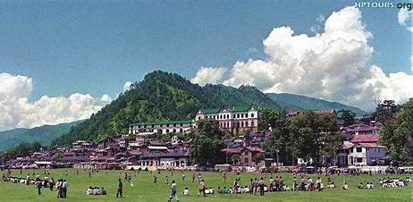
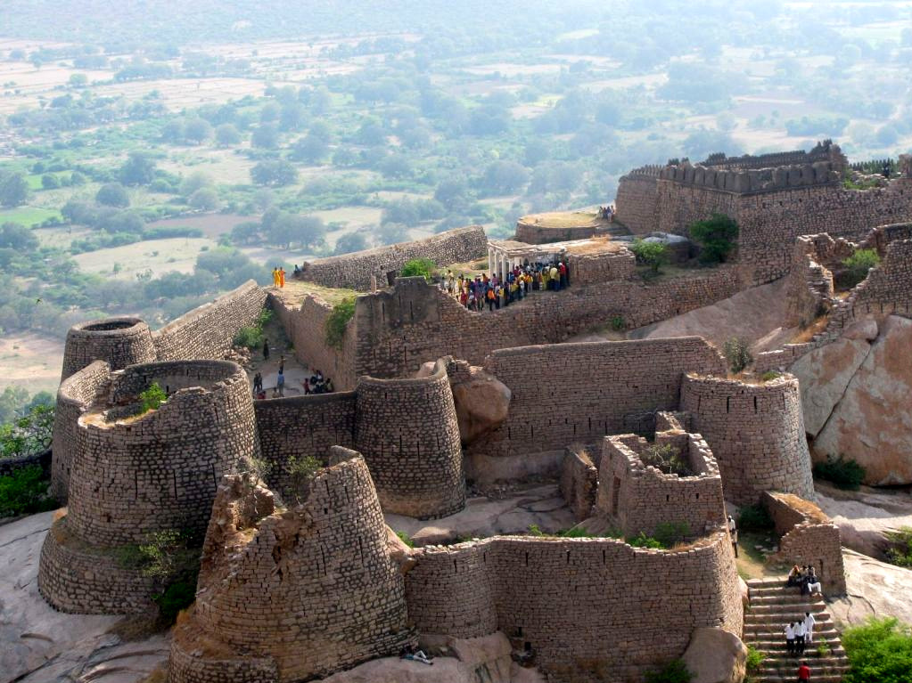

Popular Tourist Destinations in Andhra Pradesh






Famed for the rich cultural heritage and scenic beauty, Andhra Pradesh tourism offers visual treat where travellers can continuously explore and take delight in it. On visiting Andhra Pradesh, tourists can choose to explore from a varied option including magnificent historical monuments, the beautiful hill station, natural caves, beautiful architecture temples, churches, mosques and many sacred pilgrimage shrines. To get the in-depth knowledge of this one popular travel destination of South India, Andhra Pradesh Travel Guide will cover the spiritual definition profuse natural splendours and remarkable culture of the state and let the tourists get an unforgetting travel experience while holidaying in Andhra Pradesh.
Capital: Amaravati Location: South India
The winter season between October and February is the best time to plan a trip to Andhra Pradesh as the temperature remains cool and pleasant. A trip to Andhra Pradesh can also be planned during the monsoon season as some of the hill stations could be best enjoyed at its verdant best. However, the state in summer season remains hot and humid, but tourists who don’t mind the scorching heat of the sun can make it to Andhra Pradesh.
For visiting the magnificent temples, churches, mosque, pristine nature, art and craft, rich culture, monuments, museums, dance, music, fairs and festivals, beaches, food, heritage tour and shopping.